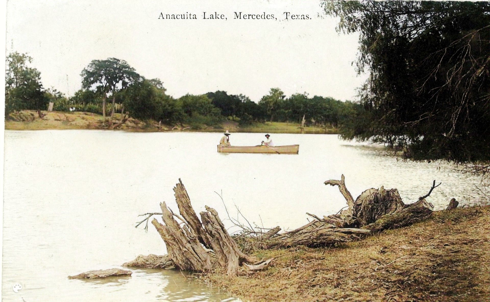
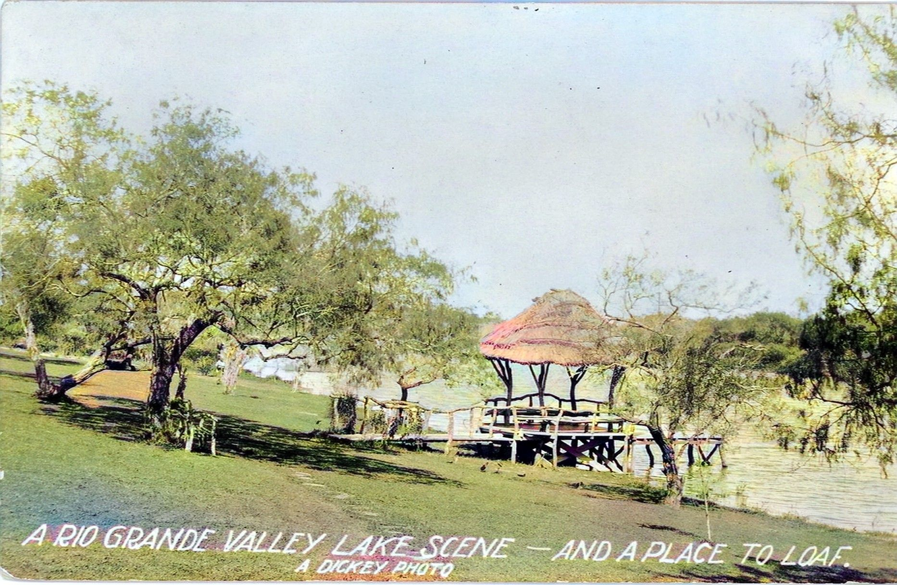
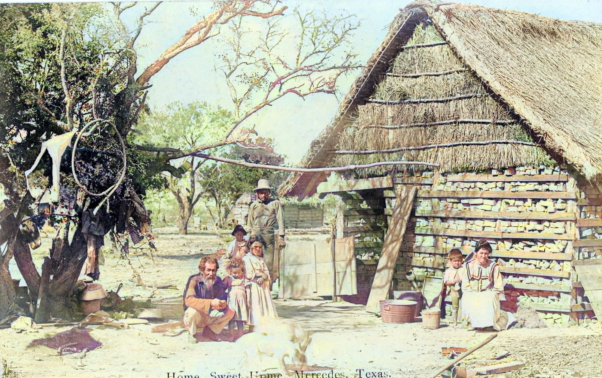
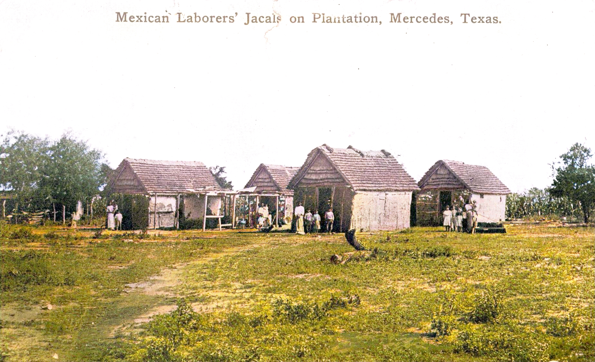
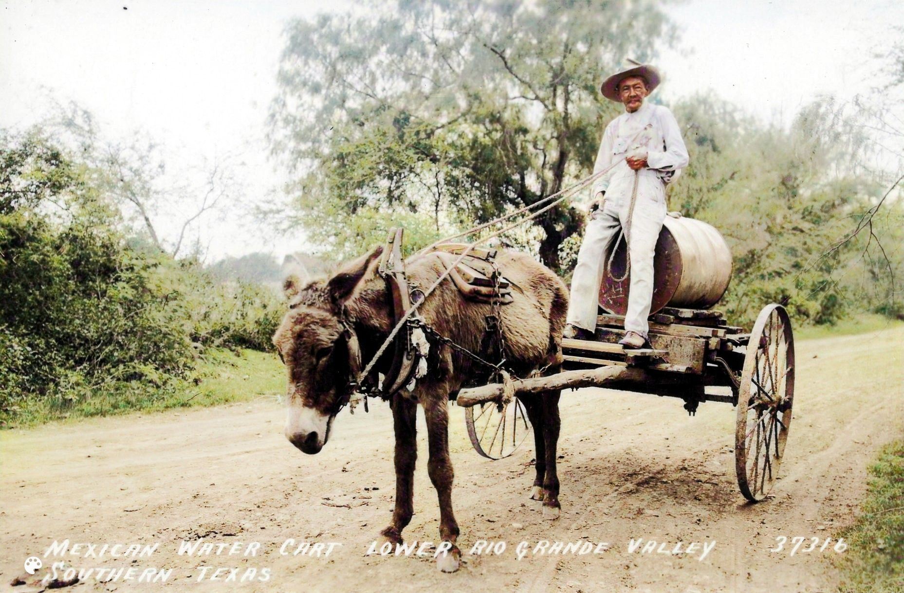
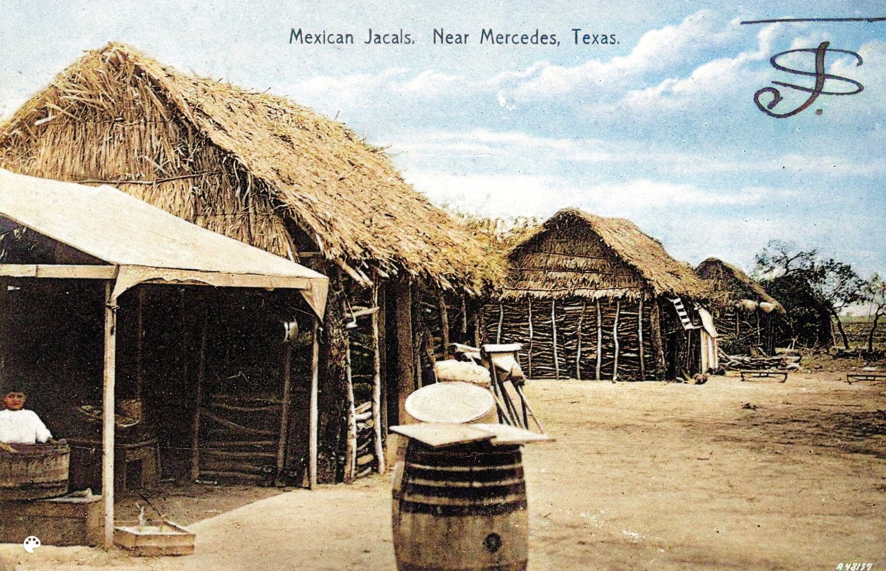
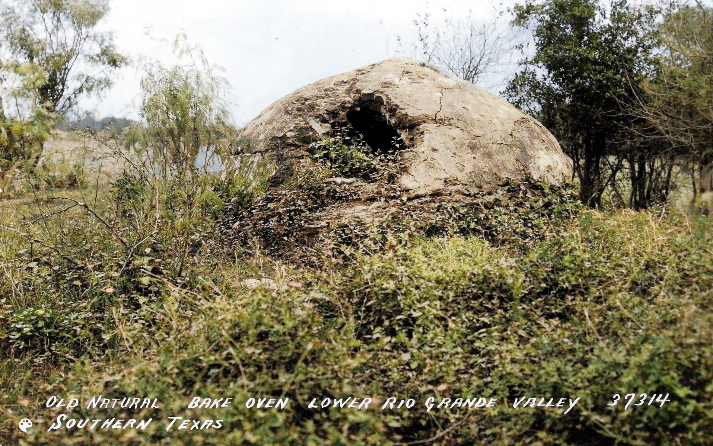
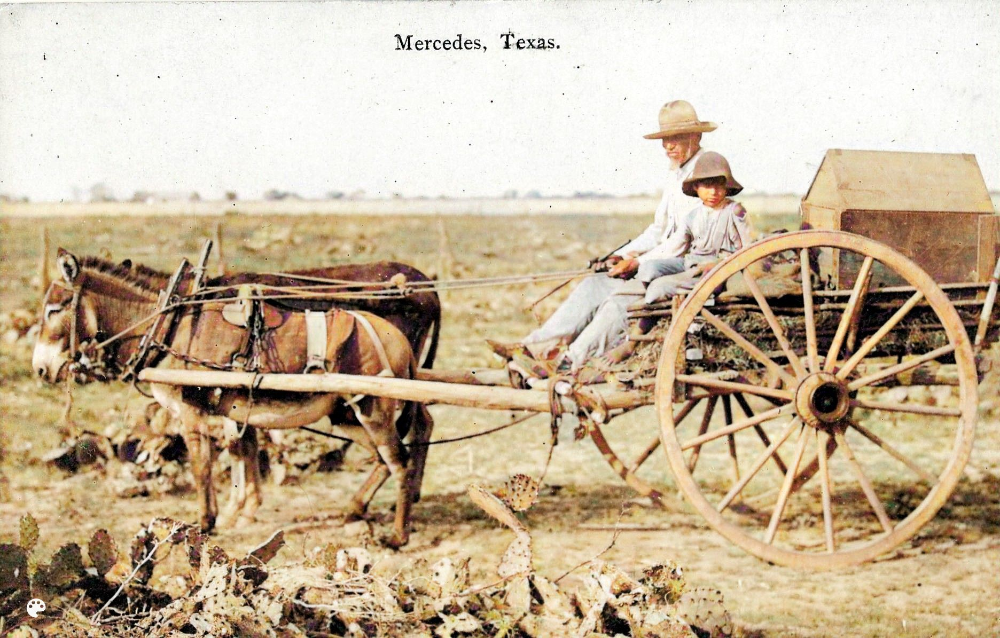
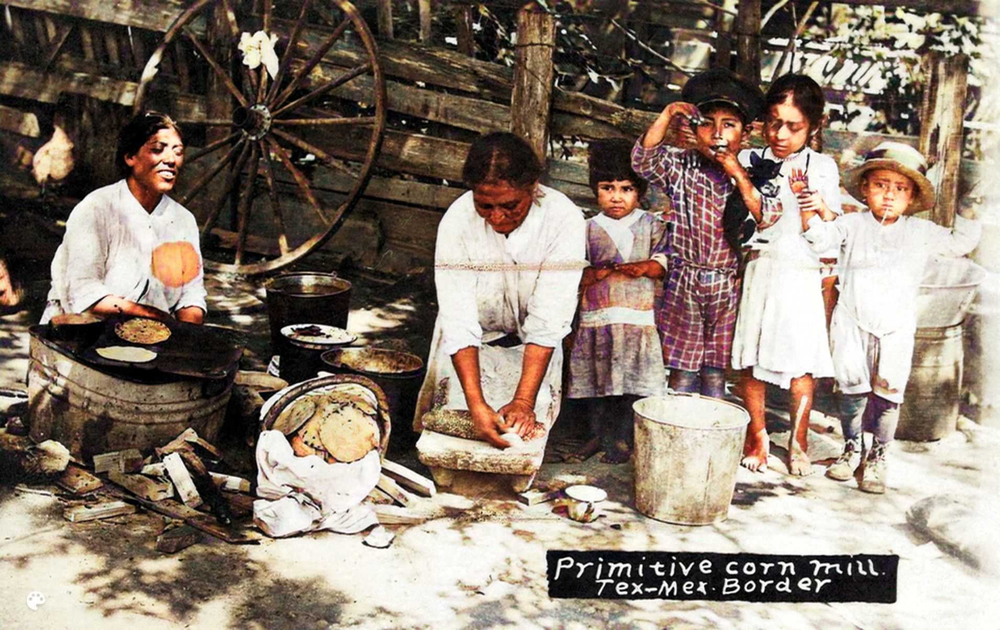

Home
B011
Anacahuitas Lake Was On Land Granted to Captain Juan Hinojosa in 1790 1907
The Anacahuitas (Wild Olive Tree) Ranch was established in 1790 on part of the Llano Grande Grant tract, which Spain had granted to Juan Jose Hinojosa de Balli. The ranch had half a mile of Rio Grande riverfront and extended north into the area that now includes Mercedes. Early descendants of Hinojosa built a large ranch house by a lake on the land. Later descendant Domiciano Cavazos set aside land for a cemetery in 1906, and many family members were buried there. The ranch was eventually sold to a developer, and Anacahuitas Lake became a popular site for recreation. Today, the Rio Grande Valley Stock Show Grounds sit on land that was once part of the Anacuitas Ranch. The historic family cemetery remains, located North of Expressway 83 in Mercedes, on west side of FM 491 (Baseline Road) where it crosses the main canal. [3] [73]
View Enlarged View Library
View Enlarged View Library
{kind=link}

View Enlarged View Library
P001
Lake Campacuas On Site of Spanish Land Grant Property 1929
In 1836, Antonio Cantú founded Rancho Guadalupe de Campacuas on Spanish land grant acreage. The lake on the ranch was originally called Tampacuaze Lake, after the Native Americans who lived there before the Spanish conquest. The lake was a resaca, a former channel of the Rio Grande River that had been cut off from the main river. Eventually, it came to be called Campacuas Lake, and the ranch headquarters was located on the shore of the lake. The Cantú family also established a school, a chapel, and a cemetery on the ranch. [96]
Around 1914, the land was purchased by the American Land and Irrigation Company and leased to the private Campacuas Beach Club. Many events were held on the sandy beaches of the lake. [74] The ranch cemetery has been preserved and is now called the Campacuas Memorial Cemetery [96] , which can be visited in Mercedes.
View Enlarged View Library
View Enlarged View Library
{kind=link}
B006
Area Ranches Included Campacuas, Toluca, Anacuitas, Relampago, Los Ebanos 1907
The height of the Spanish colonial livestock economy in the Valley lasted roughly from 1790 to 1900. Descendants of Spanish Land Grant families owned the mid Rio Grande Valley lands, including the land that later became Mercedes. The Spanish crown had granted these lands to their ancestor Juan Jose Hinojosa de Balli in 1790. Developer Lon C. Hill acquired the Capisallo Tract that Mercedes now occupies was acquired from the heirs. The area was called the Pear Orchard due to the abundance of prickly pear cacti there. [92]
Ranch workers typically lived in jacales such as the ones shown here. Jacales were constructed from mesquite, clay bricks, and other indigenous materials. Ranch owners usually lived in large homes called haciendas. Early ranches in the Mercedes area included Campacuas, Toluca, Tampacua, Anacuitas, Relampago and Los Ebanos. [3][27][73]
View Enlarged View Library
View Enlarged View Library
{kind=link}
A003
Hurricane of 1933 Destroyed Most Remaining Jacale Homes 1909
This card depicts four ranch families standing in front of their Jacale homes. Jacale homes were built from mesquite and other natural materials. Mesquite was plentiful in the area, and it was strong and durable. The homes were supported by upright poles and forked horcones (corner posts). Smaller mesquite limbs were placed horizontally across the poles with clay or stucco between them. Roofs were thatched from native grasses. [28]
Jacales were abundant into the late 1800s, but were gradually replaced as traditional ranch life diminished. The devasting hurricane of 1933 destroyed many of the jacales that remained in the Mercedes area. [27]
View Enlarged View Library
View Enlarged View Library
{kind=link}
L003
Piperos Delivered Drinking Water to Homes Without Access 1928
Water scarcity has always been a major concern in the arid Rio Grande Valley, including Mercedes. Many ranches had access to water from the Rio Grande River or one of the inland resacas (lakes). However, those that did not had to dig wells to provide fresh water for agriculture and household use. This water was often brackish and not suitable for drinking.
As a result, vendors known as piperos filled barrels with fresh drinking water from good wells or the Rio Grande River and delivered it to homes using mule-drawn wagons. This was a vital service that ensured that people had access to clean water in the dry conditions. [28]
View Enlarged View Library
View Enlarged View Library
{kind=link}
J004
Group of Jacale Homes on Large Mercedes Area Ranch 1907
Most Spanish Land Grant ranches developed into communities of families who lived and worked there. Family members worked as vaqueros, blacksmiths, cooks, carpenters, herdsmen and livestock managers on the largely self sufficient ranches. [27]
A typical ranch included the grazing land, main house where the hacendado (ranch owner) lived, a chapel, a school, work sheds, vegetable gardens, corrals, and worker's houses called jacales. The chapel and hacendado of such a ranch can still be seen at Tuluca Ranch 3 miles South of Mercedes. [27]
View Enlarged View Library
View Enlarged View Library
{kind=link}
L002
Horno Beehive Shaped Clay Oven on Mercedes Area Ranch 1928
Many Mercedes area ranches and other communities built large clay ovens called hornos. A wood fire was built inside allowing the thick clay chamber to absorb heat. After a few hours the coals were removed to a nearby container to reheat the oven as needed. Food was placed in the oven and the smoke hole and doorway sealed. The horno maintained a usable, though slowly dropping, temperature for several hours. [2]
View Enlarged View Library
View Enlarged View Library
{kind=link}
B007
Mercedes Father and Son in Mule Drawn Cart 1907
Father and son driving in a mule drawn wagon, a typical form of transportation in the early days of Mercedes. The small pen probably contains an animal as the wagon is lined with hay. There is a large Prickly Pear Cactus in the foreground.
View Enlarged View Library
View Enlarged View Library
{kind=link}
U004
Mercedes Ranch Family Making Tortillas in Outdoor Kitchen 1916
This postcard provides a glimpse into life of a family living in a jacale home on a ranch near Mercedes. Jacale homes often had a ramada (grass arbor) for cooking and mealtime. Here two women are busy preparing tortillas, a staple food in Mexican cuisine. The woman in the center is rolling corn masa dough into flat tortillas. There is a bucket of water and a cup in front of her. The woman on the left is cooking the tortillas on a wood-fired grill. A large basket of prepared tortillas on a stack of wood is placed between them. A group of children stand to the right, one of them holding a small dog or cat. [2]
View Enlarged View Library
View Enlarged View Library
{kind=link}

View Enlarged View Library
Home